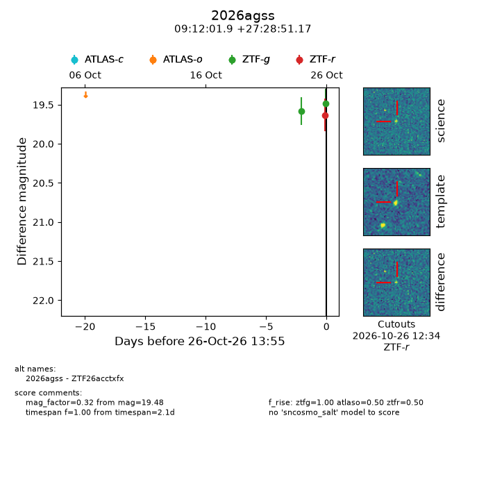
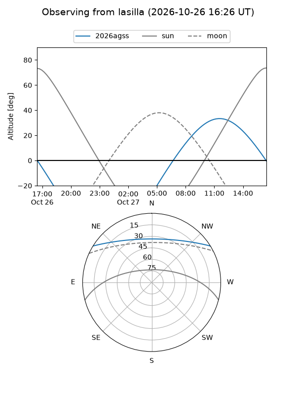
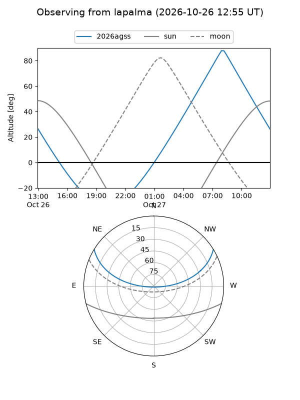
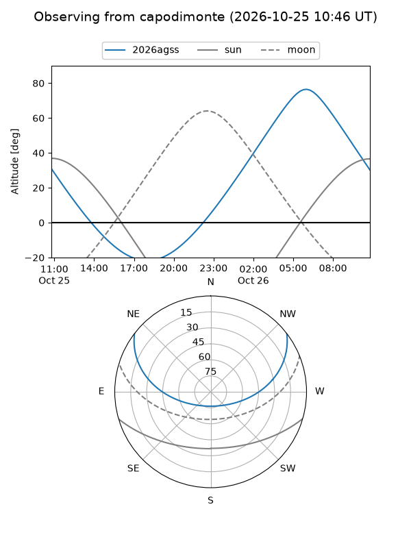
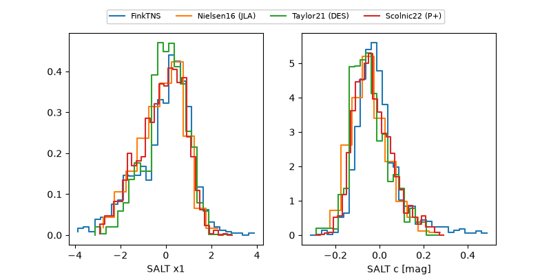

2026agss
Target 2026agss at 2026-10-26 13:57
Aliases and brokers:
FINK-ZTF: ztf.fink-portal.org/ZTF26acctxfx
Lasair-ZTF: lasair-ztf.lsst.ac.uk/objects/ZTF26acctxfx
ALeRCE-ZTF: alerce.online/object/ZTF26acctxfx
YSE-PZ: ziggy.ucolick.org/yse/transient_detail/2026agss
TNS name: wis-tns.org/object/2026agss
Direct TNS query: direct search
alt names
ZTF26acctxfx (ztf,fink_ztf)
2026agss (tns,yse)
Coordinates:
equatorial (ra, dec) = 138.0078,+27.48088
equatorial (HMS+DMS) = 09:12:01.88,+27:28:51.17
galactic (l, b) = (199.1600,+41.67961)
Flags:
peak dt:
Photometry:
last atlaso=nan, ztfg=19.48, ztfr=19.63
1 atlaso, 2 ztfg, 1 ztfr detections
Lightcurve

Visibility



Additional plots
